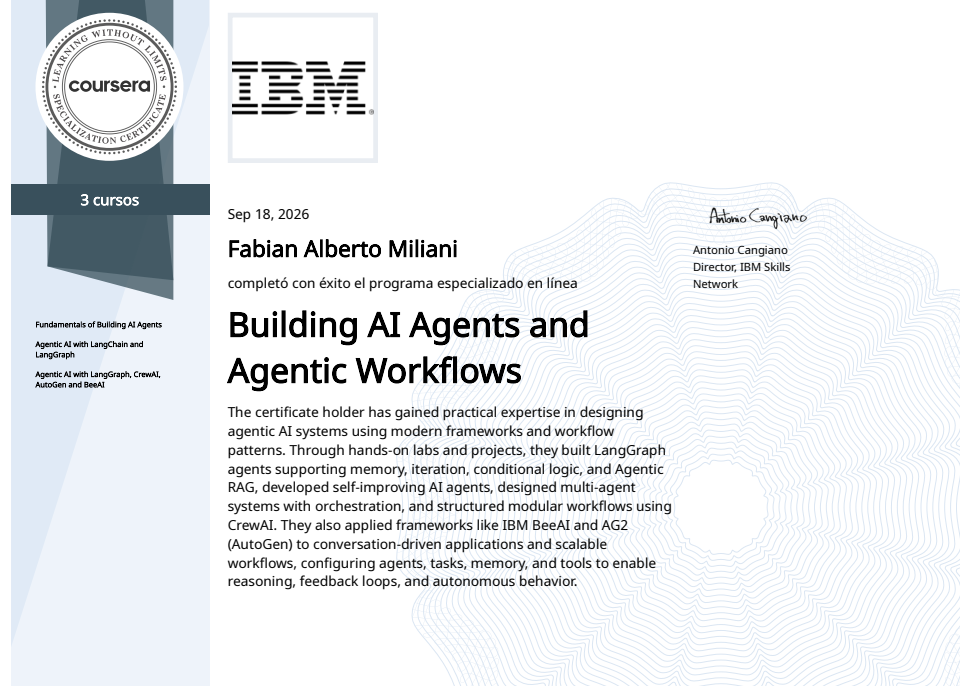

IA generativa y agentes
Sistemas multi-agente, Agentic RAG, tool calling y prompt engineering.
Fabián Alberto Miliani
Desarrollador senior con más de 12 años en Angular y TypeScript. Hoy construyo agentes con LLM, RAG y MCP.

Llevo más de 12 años construyendo aplicaciones web y plataformas de gestión empresarial con Angular y TypeScript. Ahora me centro en aplicaciones con IA generativa.
Diseño y construyo agentes de IA de extremo a extremo: tool calling, RAG con bases de datos vectoriales, memoria persistente, servidores MCP, voz y visión. Trabajo con modelos locales (Ollama) y en la nube (Groq, NVIDIA NIM, Hugging Face).
Mi perfil combina lo que pocos equipos de IA tienen: experiencia sólida en producto y frontend para llevar los agentes a interfaces que usan las personas.
Sistemas multi-agente, Agentic RAG, tool calling y prompt engineering.
Visión sobre imágenes y documentos, voz con Whisper y Piper, imágenes con FLUX.1.
Proyectos de IA
Un proyecto propio con agentes, RAG, memoria y voz, optimizado para correr en una GPU de 6 GB.
Groq con Qwen3-32B ejecutando acciones reales: archivos, correo, imágenes y carga dinámica de skills.
Documentación y proyectos propios indexados en PostgreSQL con pgvector, en Docker.
Conversaciones y conocimiento, con umbral de similitud para no recuperar contexto irrelevante.
Model Context Protocol para acceso a archivos y lectura de correo IMAP.
Whisper para escuchar y Piper para hablar. La voz dispara herramientas del agente.
Qwen2.5-VL para imágenes, FLUX.1 en NVIDIA NIM y agentes especialistas por dominio.
Extrae los datos de certificados en PDF e imagen con un modelo de visión (Qwen2.5-VL), reescribe el CV optimizado para ATS con Qwen3 y lo exporta a PDF. Todo en local, sin enviar datos personales a la nube.
may 2024 - hoy
GFT Technologies
Madrid, España
may 2023 - jun 2024
Plexus Tech
Madrid, España
abr 2022 - ago 2023
Searchit
may 2018 - mar 2022
Paradigma Digital
Aravaca, Madrid
jul 2016 - nov 2016
Sportsnet Red Social Deportiva y Eventos, S.L.
Alcobendas, Madrid
Aplicativos web y sistemas administrativos para clientes empresariales, con PHP, Angular, JavaScript, HTML5, Ajax y jQuery.
sep 2013 - feb 2016
LIDERWEB.CO
Desarrollo de sistemas y aplicaciones web, planificación de sitios y asesoramiento tecnológico para empresas.

Un asistente conversacional hecho con Gradio y publicado en Hugging Face Spaces. Se abre en una pestaña nueva.